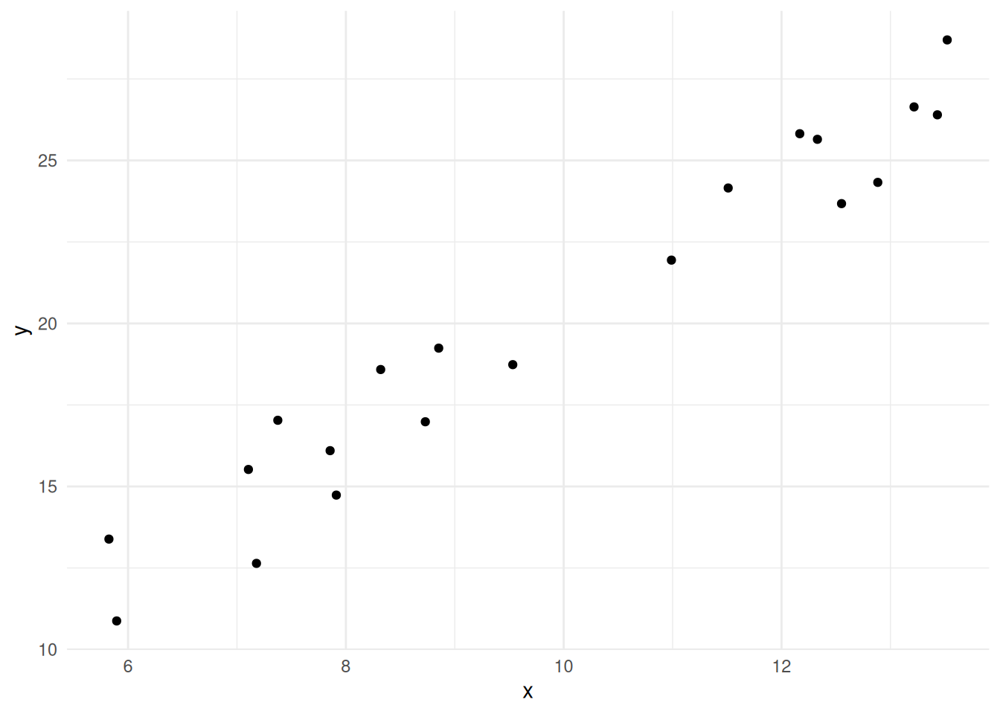
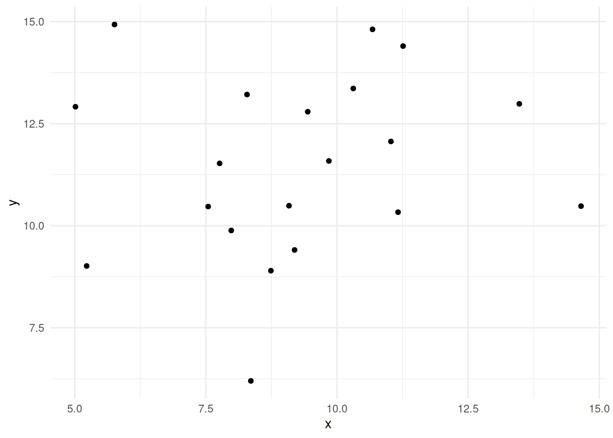
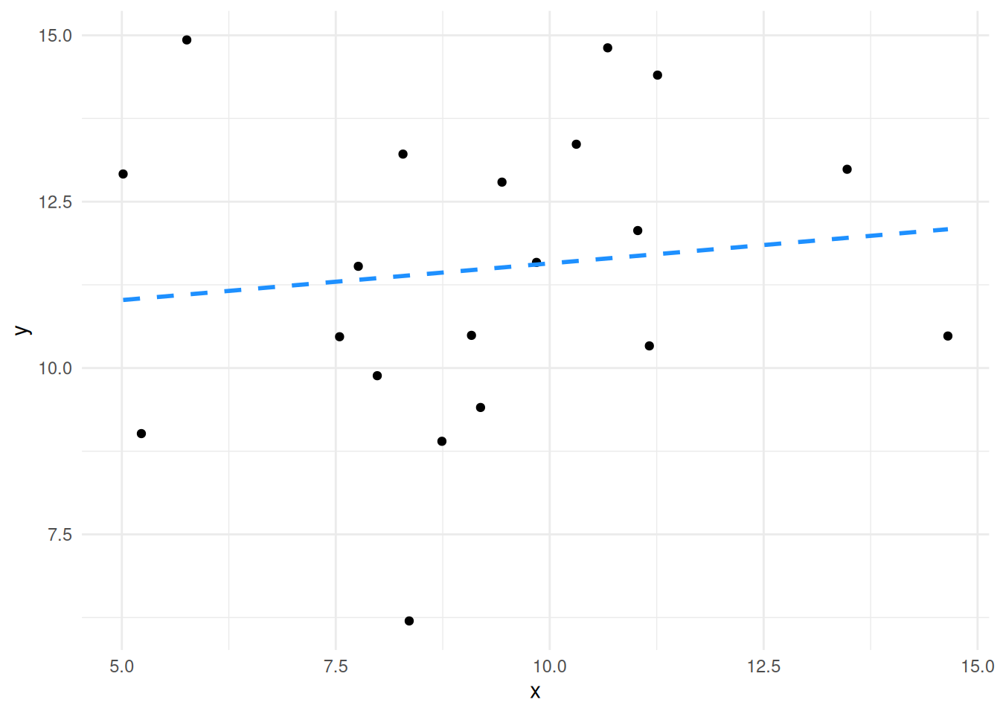
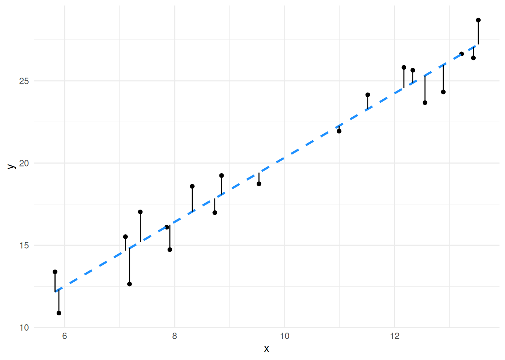
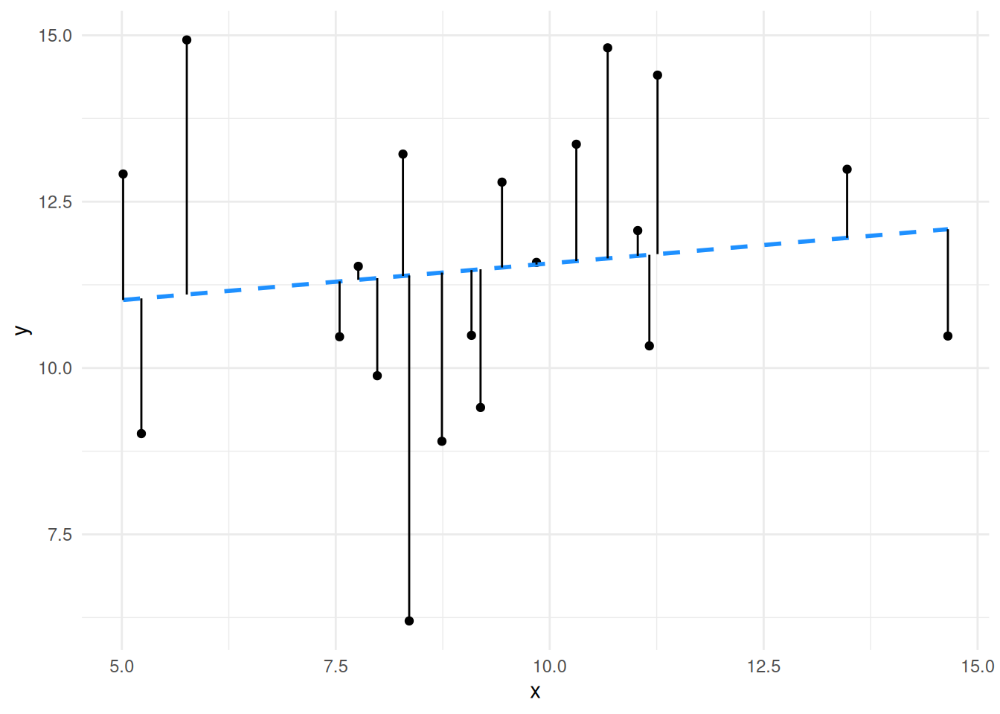
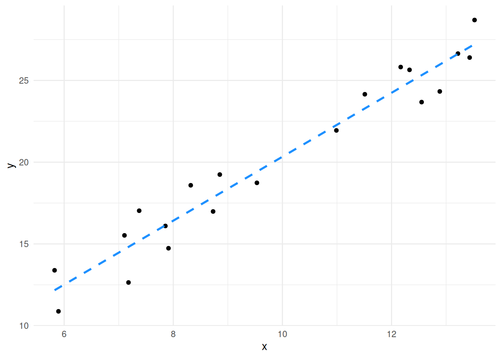
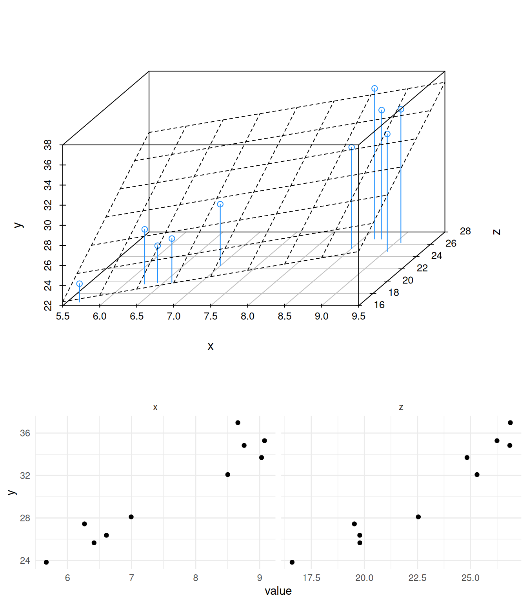

2 The linear model
- Questions
- How do we describe a straight line?
- What is a linear model?
- How exactly does a straight line and a linear model help us determine differences?
- Objectives
- Understand the parameters of a straight line
- Understand the statistical components of a linear model
- Understand how a sloped line implies a difference in a linear model
- Keypoints
- Straight lines have two parameters
- Linear models contain statistics
- Linear models can tell us whether a slope is likely flat or not given the data
2.1 From straight lines to data
Now that we’ve decided to use the straight line as our Null Model, with a flat line being the case where there is no difference and a sloped line being otherwise, we need to start to think about lines and a statistical relative called a Linear Models. Linear models are a tool that are similar to a line of best fit, with measures of the variability of the data points that go in to building them. The linear model will be how we bring statistical rigour into our conceptual tool of using straight lines to think about differences. In this section we’ll look at them in some detail, but first we’ll recap some facts about straight lines.
2.2 Straight line relationships are described using two parameters
Its all about \(y = ax + b\) (or \(y = mx + c\), depending on where you went to school). These two equivalent formulae are the standard high-school equations for describing a straight line. They represent how the quantity \(y\) changes as \(x\) does.
As a refresher, \(a\) tells us how much \(y\) increases for every unit increase in \(x\). Here’s an example for the equation \(y = 4x\)
If we play about with that value, the slope of the line changes, the \(a\) term is known as the slope, or gradient, or more often because it is just a multiplier of \(x\) its called the coefficient. Here’s some different coefficients just to prove that point
The \(b\) part of the formula just tells us how much we add on to \(y\) after we’ve calculated the coefficient effect. It has the effect of pushing the line up and down the y-axis. When we look at the value of \(y\) for \(x = 0\) we get the position that the graph hits the y-axis so this number is often called the intercept. Here’s a set of lines to show that.
That’s all we need to know about the equation of the straight line. Now we need to look at how they’re a useful tool when analysing experimental data.
2.3 Linear models try to create a linear equation from data
A linear model is a simplification of the relationship between some sets of numbers (in the simple case we will introduce here, it is two sets, but it can be more). At its heart is a straight line, with the equation we discussed above and a certain set of values for \(a\) (the coefficient) and \(b\) the intercept, along with some statistics that describe the strength of the relationship.
Let’s walk through building one, graphically and in R.
First we need some sets of values, \(x\) and \(y\). Usually, these would be from an experiment, but here I’ll make some toy ones.
df <- its_random_xy_time(20)
its_plot_xy_time(df)
The graph shows 20 random \(x\) values between 5 and 15 plotted against 20 \(y\) values which are calculated as \(2x\) with a little random noise added. We can see that there is definitely a relationship (not least because we engineered it that way). The objective of the linear model is to quantify and describe the relationship in some way and here’s where the linear equation comes in. If we could come up with a line that fitted through the data we could use the equation of that line to roughly describe - or model - our data. Skipping to the end a bit, then there is absolutely a way to get the line from the data. The methods are described in lots of statistics books so I won’t repeat them, but you may be familiar with the general methods, it’s the ‘line of best fit’ according to the ordinary least squares method. Details aside, the actual linear model function we need in R is lm() and it works like this
lm(y ~ x, data = df)That’s it! The function lm() does the work, it takes a fairly odd syntax, though. The y ~ x bit is an R formula and describes the relationship you want to examine, you can read it as y depends on x. The y and x we’re referring to here are the two columns of numbers we created and plotted above, the data argument just says in which object to look for the data.1
Looking at the function output we get this
Call:
lm(formula = y ~ x, data = df)
Coefficients:
(Intercept) x
0.778 1.955 These are the intercept (\(b\)) and the coefficient of \(x\) (\(a\)) that we need to describe the line. So our data are described by the line \(y = 1.955x + 0.778\).
So this line is a model of the data, it’s a model in the sense that it is something that represents our data, but isn’t it. Looking at them together we can see the model and the data it stands for.
its_plot_xy_time(df, line = TRUE)
The line alone can be useful to teach us about our data, but there’s more to the linear model than just the line.
2.4 Linear models describe relationships between variables
Beyond working out the equation of the line, the linear model process aims to quantify and describe relationships between the variables in the data, in our toy example the variables are \(x\) and \(y\). Specifically when we say ‘relationship’, we mean whether a change in the value of \(x\) appears to go along with some change in the value of \(y\).
In other words, we can think of relationship as being the slope. If \(x\) causes some change in \(y\) when we plot it then there must be a slope. We call the slope \(a\) in our equation of a line and we call it the coefficient of the \(x\) term in our linear model. These are all equivalent interpretations for our purposes, slope, relationship, coefficient.
Linear models calculate statistics to help us decide whether the coefficient/slope/\(a\) of the relationship we observe is important or not.
2.5 Not all lines of best fit are equally good
Although a line of best fit can always be calculated, the line might not be worth much. Consider two sets of very similar numbers. Here’s two vectors of random numbers with the same mean and their plot.
more_df <- data.frame(
x = runif(20, 5, 15),
y = runif(20, 5, 15)
)
its_plot_xy_time(more_df)
We can definitely calculate a line that fits these,
lm(y ~ x, data = more_df)
Call:
lm(formula = y ~ x, data = more_df)
Coefficients:
(Intercept) x
10.4695 0.1103 and it would be \(y = 0.1103x + 10.4695\). But if we compare the fit of those lines, like in these plots


we can clearly see that not all lines are created equal. The first line fits the data much more closely than the second one. We can also see that the relationship between \(x\) and \(y\) is much weaker in the second set than in the first (the coefficient/slope/\(a\) is weaker. So a sensible linear model of our data would give us not just the equation but also measures of the closeness of fit and therefore believability of the value of slope of the line. In terms of our Null Model flat line/sloped line model this means that when we have a significant coefficient, we are not likely to have a flat line. Let’s look at the statistics in the linear model that show us what a significant coefficient is.
2.6 Linear models contain statistics describing the goodness of the model
The same function we’ve already used - lm() - calculates certain statistics. We can print them using the summary() function.
model <- lm(y ~ x, data = df)
summary(model)
Call:
lm(formula = y ~ x, data = df)
Residuals:
Min 1Q Median 3Q Max
-2.17560 -1.00570 -0.01092 1.17016 1.83047
Coefficients:
Estimate Std. Error t value Pr(>|t|)
(Intercept) 0.7780 1.1442 0.68 0.505
x 1.9555 0.1122 17.42 1.03e-12 ***
---
Signif. codes: 0 '***' 0.001 '**' 0.01 '*' 0.05 '.' 0.1 ' ' 1
Residual standard error: 1.303 on 18 degrees of freedom
Multiple R-squared: 0.944, Adjusted R-squared: 0.9409
F-statistic: 303.6 on 1 and 18 DF, p-value: 1.027e-12This output is verbose, there are four blocks.
Model Call- just a restatement of the function we calledResiduals- a set of measures of the distribution of the residuals, we’ll look at this later.Coefficients- the terms of the equation and their statistics; so the intercept (\(b\)) and the coefficient ofx(\(a\)) that we’ve already seen and theEstimate(computed values of those). We see also columns of statistics for each.- The model level statistics summary - some statistics that apply to the whole model.
Let’s start at the bottom and look at model level summary.
2.6.1 Residual Standard Error
This is a measure of how well the line fits the data. In essence Residual Standard Error is the average distance from each real data point to the line, the further the points are from the line (the worse the fit) the bigger the Residual Standard Error. If you look at the plots again with those distances drawn in you can see quite clearly the residual error for the second model is much bigger than for the first.


The error term
We’re working hard here to avoid using too much mathematical notation and examination of the mechanics of the linear model, but the residuals are quite an important aspect, so Im going to use this aside to delve just a little deeper. Unlike the linear equation, the linear model has an extra error term, \(e\) which represents the residuals by quantifying the average distance from the actual measurments to the line in the y-axis.
The \(e\) term adds something onto the y value of the whole equation; the bigger \(e\) is the more we need to add on to the value of the \(x\) from the line to get the real \(y\). Logically, the bigger \(e\) is the more the line misses the points in the model overall. The error is a major determinent of whether a model is any good or whether things are significant so it’s worth knowing how it relates to the model.
2.6.2 \(R^2\)
\(R^2\) is another measure of how well the model fits the data. If you’re thinking correlation coefficient here, then you’re in the right area. \(R^2\) describes the proportion of variance in the \(y\) values that can be explained by the \(x\) values. The \(R^2\) always falls between 0 and 1. Closer to 1 is usually better, but it is very domain and dataset dependent. With small and biological data sets, we don’t always see values close to 1 because of the noise of the system.
The proper one to use in most all cases is the Adjusted R-squared.
2.6.2.1 \(R^2\) versus Residual Standard Error
So what’s the difference between these two - at first glance they do the same thing. The major difference is that RSE is in the units of the data and \(R^2\) is in relative units, so you can use them in different situations e.g if you want to make your model work within particular tolerances or you want to compare models in different units.
2.6.3 \(F\)-Statistic
The \(F\)-Statistic is an indicator of a relationship between the \(x\) and \(y\) values of the model. In effect \(F\) tests how much better the relationship is in your model than a model in which the relationship is completely random. It’s actually a ratio such that when the \(F\)-statistic is at 1, the relationship is no stronger than a random relationship. The further above 1 \(F\) is, the more it is likely there is a real relationship in the model. The \(p\) value here is the \(p\) that this size of \(F\) would occur in a random relationship with a similar dataset size. As with the other statistics, the significance of the actual size of \(F\) is dependent on the domain and data being analysed. ## Coefficients have statistics
Along with these model level statistics, linear modelling with lm() gives us a set of statistics per coefficient. These measure the effect that each coefficient has on the output variable \(y\). Basically a significant coefficient, is one that has a non-zero slope and is an important determinant of the value of \(y\).
2.6.4 Estimate
These are the Estimate, which is the actual value of the coefficient from the model. We will see that along with Intercept we can have models with more than one other coefficient. These are given in the units of the data.
2.6.5 Std. Error
A measure of the variability of the strength of the effect, so if some \(x\) points give more pronounced \(y\) values at similar coefficient values, you get a higher variability of the strength. Generally lower standard error of the coefficient is good.
2.6.6 \(t\)-value
An estimate of how extreme the coefficient value is, basically how many Standard Deviations away the estimated coefficient is from the centre of a presumed Normal distribution with mean 0. It is absolutely a \(t\)-test \(t\)-value, and like in a \(t\)-test we want it to be high. The higher \(t\) is, then the more likely that the coefficient is not 0.
Wait, what?
Why would we care whether the coefficient is 0 or not? Well, because if it is 0, then it’s having no effect on the model. Consider again the equation of a line
\[\begin{equation} y = ax + b \end{equation}\]
If we let the coefficient \(a = 0\), this happens
\[\begin{equation} y = 0 x + b\\ y = b \end{equation}\]
The coefficient disappears, it’s having no effect!
If the coefficient is not many standard deviations away from 0, it’s probably not having much effect on the relationship. The \(t\) value tries to work out whether, given the data, the coefficient is in anyway different to 0.
In plainer English, we are really saying that the size if the slope is not likely to be 0. That it is not likely that there is no relationship. Which is weak inference, but is exactly the same sort of inference that all the other hypothesis tests make and is exactly the same interpretation.
Of course, this will depend on the size of the standard deviation. The noisier the data or the smaller the sample size then the larger this value will need to be to be important.
2.6.7 \(Pr(>|t|)\)
This weird shorthand expression is just giving the probability of getting a value larger than the \(t\)-value. This comes from a \(t\)-test within the model and takes into account the dataset size and variability, you can think of it as the \(p\)-value of a test asking whether the coefficient is equal to 0. So if \(p\) is less than 0.05 you can say that the value of the coefficient is not likely to be 0 and therefore is having an effect on the model.
2.7 A non-zero slope is what matters
By looking at the \(p\)-value of the coefficient then, we can see whether there is a significant relationship or, more accurately a non-zero slope
We can really emphasise by looking at the plots of lines we looked at earlier.


The slope of the second plot is weaker, it’s much flatter - much closer to zero, in fact given the spread of the data we aren’t that confident that it isn’t a flat (zero) slope, so we aren’t that confident that there is a significant relationship.
We can quickly see that definitively using lm() if we compare two models based on those two datasets.
We already built the model for the first slope.
summary(model)
Call:
lm(formula = y ~ x, data = df)
Residuals:
Min 1Q Median 3Q Max
-2.17560 -1.00570 -0.01092 1.17016 1.83047
Coefficients:
Estimate Std. Error t value Pr(>|t|)
(Intercept) 0.7780 1.1442 0.68 0.505
x 1.9555 0.1122 17.42 1.03e-12 ***
---
Signif. codes: 0 '***' 0.001 '**' 0.01 '*' 0.05 '.' 0.1 ' ' 1
Residual standard error: 1.303 on 18 degrees of freedom
Multiple R-squared: 0.944, Adjusted R-squared: 0.9409
F-statistic: 303.6 on 1 and 18 DF, p-value: 1.027e-12Let’s also build the model for the second slope, it is in a dataframe called more_df
model_2 <- lm(y ~ x, data = more_df)
summary(model_2)
Call:
lm(formula = y ~ x, data = more_df)
Residuals:
Min 1Q Median 3Q Max
-5.1924 -1.5007 0.1171 1.7748 3.8260
Coefficients:
Estimate Std. Error t value Pr(>|t|)
(Intercept) 10.4695 2.0315 5.154 6.67e-05 ***
x 0.1103 0.2127 0.519 0.61
---
Signif. codes: 0 '***' 0.001 '**' 0.01 '*' 0.05 '.' 0.1 ' ' 1
Residual standard error: 2.296 on 18 degrees of freedom
Multiple R-squared: 0.01472, Adjusted R-squared: -0.04001
F-statistic: 0.269 on 1 and 18 DF, p-value: 0.6103We can clearly see that the second model is a poorer fit to the data. The model level statistics are less convincing: \(F\) is reduced to 0.269 (from 303.6), the \(p-value\) shows the difference occurs by chance 61 % of the time and the Adjusted R-squared is close to 0, indicating a poor relationship. The coefficient was measurable, but it is not significant (and not coincidentally) occurring by chance 61 % of the time. The slope therefore is not significantly different from 0 and \(x\) in model_2 appears to have no effect on \(y\).
It is this slope assessing feature of the linear models that will help us in our overall goal of using the linear model to do the work of all the other statistical tests we commonly use. If we have a good model and a good fit, then we can make really flexible use of the slope by looking at the significance of the coefficient.
2.8 Major points
After all that inspection of the linear model, here’s what you need to remember:
Take-homes
- Linear models describe relationships between sets of numbers (variables)
- The creation of the model generates statistics about the goodness of the model
- A non-zero coefficient (slope) means there is not likely to be no relationship (!)
2.9 Extra credit: Understanding linear models through the notation
In this section at the end I wanted to take one last step and look at how the linear model is specified because the notation is an aid to understanding the model a bit more deeply. It’s probably OK to skip this bit if the idea of notation doesn’t grab you. At the start of this chapter we wrote the linear equation like this
\[\begin{equation} y = ax + b \end{equation}\]
and through the chapter we developed the idea that the linear model is the line with some statistics and noise built in, such that we can try to render it like this
\[\begin{equation} y = ax + b + e \end{equation}\]
with \(e\) being a measure of error (or random measurement differences) added on, somehow, and it does aid our thinking to take that liberty a little, because of the way we can see the relationship of the error now.
But unlike a straight line, a linear model doesn’t have to have only one slope, it can have many. This doesn’t mean that the line has a bend in it, like this
but rather that the model can take into account more than one data axis (variable) (or dimension) - more like this, where a new variable is called \(z\), so the whole thing if plotted looks more like the top 3D panel here in which the model allows us to see the combined effects of \(x\) and \(z\) on the output \(y\) but we can focus on each variable individually by taking one at a time, like in the two split panels at the bottom (note how this is like looking into the front and right side of the 3D panel individually).
its_three_variable_plot_time()
We can only see up to two extra axes in a plot, and only visualise three without getting twitchy eyes, but going to three, four or many more dimensions is no problem for the linear model framework and they all work the same way. When it comes to notating this we run into a problem as we run out of letters. Let’s build it up…
First, a one slope/coefficient/independent variable model, adding one variable at a time
\[\begin{equation} y = ax + e \end{equation}\]
The first thing that happens is the linear model disposes of the intercept term \(b\), that’s OK, it is still computed, but we don’t have it in the model notation now. Next we build up the number of variables/dimensions. We’ve already used \(a\) and \(x\) so for the next slope we can use \(z\) for the variable and \(b\) for its coefficient. We can go further for a third slope and use \(w\) and \(c\)
\[\begin{align*} y &= ax + bz + e\\ y &= ax + bz + cw + e \end{align*}\]
Hold on though, this is already getting very confusing, \(cw\) is a bit hard to follow and it only gets worse. To get around this proliferation the notation of a linear model usually uses subscript numbers, all coefficients are given the Greek letter beta \(\beta\), all variables are given \(x\) and each is written with a little number after that distinguishes them
\[\begin{equation} y = \beta_1 x_1 + e \end{equation}\]
then that can be extended easily to \(n\) sets of variables. Finally, because the relationship between \(y\) and the variables in a linear model isn’t strictly speaking a mathematical equality we use the ~ operator.
\[\begin{equation} y \sim \beta_1 x_1 + \beta_2 x_2 \dotsc + \beta_n x_n + e \end{equation}\]
We can see from this equation that a linear model is really just a load of variables added together to give some outcome \(y\). This makes much more sense when we put words in. Let’s consider a plant growth experiment, in which we varied light, water and fertilizer and measured weight. The model in words looks like this
\[\begin{equation} \mbox{weight} \sim \beta_1 \mbox{light} + \beta_2 \mbox{water} + \beta_3 \mbox{fertilizer} + e \end{equation}\]
We can see that what the linear model is looking for is all those values of \(\beta\) - it is going to calculate slopes for us. It is the job of the linear model to work out the coefficients and intercepts from the data we put into it and to tell us which of the slopes are non-zero ones and therefore important in determining the size of the output variable. With this information we can tell not only significant differences between the variables, but whether any are more important than others in affecting the outcome.
At the very least knowing notation like this will be useful later when we are looking at comparing multiple variables with linear models, but the linear model also gives us a lot of ways of talking about our experiment that we might not otherwise have had. The model gives us a way of assessing and quantifying the effects of the experimental variables on the outcome and a way of making quantitative predictions or hypotheses about the experiment, we can use expected values of the coefficients to say how we believe a model will work, when it proves to be different from the data we can validate or falsify our hypotheses.
Roundup
- Straight lines are described by an equation with two parameters
- Linear models contain information about the data and can tell us whether a slope is likely flat or not given the data
For you to do
Use the interactive sliders and questions below to check your understanding — everything runs in your browser. Drag a slider and watch the plot update, then answer. The plots are computed live in your browser, so they take a moment to catch up after you move a slider — the plot fades back in once it’s recalculated.
2.9.1 Straight lines
In \(y = ax + b\), the number represented by \(a\) is known as what?
✗The multiplier of \(x\)
✗The factor of \(x\)
✓The coefficient of \(x\)
Why?
\(a\) does multiply \(x\), but its proper name is the coefficient — not the “multiplier” or “factor”.
In \(y = ax + b\), the number represented by \(b\) is known as what?
✗The increaser of \(y\)
✗The factor of \(x\)
✓The intercept
Why?
\(b\) does increase \(y\), but its proper name is the intercept — it sets the place the line crosses the \(y\)-axis.
Use the slider to examine the role of \(a\), the coefficient of \(x\), then answer the question.
As the coefficient reaches zero, the slope of the line…
✗gets steeper
✓gets flatter
✗goes negative
Use the slider to examine the role of \(b\), the intercept, then answer the question.
Changing \(b\) changes the place the line hits the \(y\)-axis, but nothing else.
✓True
✗False
2.9.2 Linear models
Linear models try to build a linear equation from data, and the quality of the model depends on how well it fits. Use the sliders to explore how the coefficient and the amount of noise (experimental variability) affect the fit and the model statistics, then answer the questions.
Increasing the noise has what effect on the fit of the model to the data?
✗The fit gets better
✓The fit gets worse
…and this is true for any value of the coefficient.
✗False
✓True
When the noise increases (for a fixed coefficient)…
✓\(p\) goes up, adjusted \(r^2\) goes down, \(F\) goes down
✗\(p\) goes down, adjusted \(r^2\) goes up, \(F\) goes up
✗\(p\) goes down, adjusted \(r^2\) goes down, \(F\) goes up
✗\(p\) goes up, adjusted \(r^2\) goes up, \(F\) goes up
When the coefficient increases (for a fixed amount of noise)…
✗\(p\) goes up, adjusted \(r^2\) goes down, \(F\) goes down
✓\(p\) goes down, adjusted \(r^2\) goes up, \(F\) goes up
✗\(p\) goes down, adjusted \(r^2\) goes down, \(F\) goes up
✗\(p\) goes up, adjusted \(r^2\) goes up, \(F\) goes up
When the coefficient is zero, what should happen to \(x\)?
✓\(x\) should evaluate to zero
✗\(x\) should stay unchanged
Why?
\(x\) is multiplied by the coefficient, so when the coefficient is 0, \(ax\) works out to zero and effectively disappears.
Why doesn’t the line behave exactly as expected when you set \(a\) to zero?
✗\(a\) must be being altered to stop the program breaking
✓The \(ax\) part is worked out first, then experimental noise is added, so the final value for each point is rarely exactly zero
Why?
The \(ax\) term is computed first and then noise is added — so each point’s value is rarely exactly zero. (If \(ax +\) noise were exactly zero, that point would vanish.)
Here we’re using the example data, but this is never different whether you’re using example or ‘real’ data. The maths is the same and the code is the same.↩︎